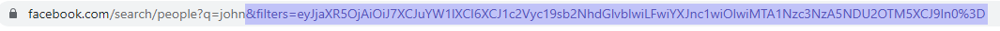
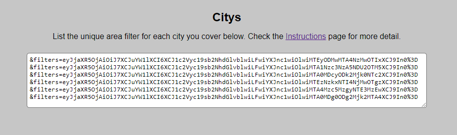

Welcome to Facebook URL Generator. The purpose of this site is to construct links that you can open with your Facebook account to automatically search for names and apply filters to those results. Read further to better understand how to get the most out of this tool.
There are two preferences you can adjust, though the generator will work whether you adjust them or not. The preferences are individually explained below.
Auto Open Links: When Auto Open Links is turned off(default), the generator will simply create the URL/URLs, and output links you can click to open. When you turn Auto Open Links on, every time you hit “generate” a new tab will open to the given link, for each link generated. Note that if this feature isn’t working, it is likely being blocked by a popup blocker, but can be fixed by allowing pop ups on this site.
Target Age Range: This setting can be used when you are looking for profiles in a specific age range. When you have one box checked and the other not checked, the generator will draw names that are more popular in certain age groups. When both boxes are checked or both boxes are un-checked, the generator will draw from the names in both age ranges.
When you leave the City Filter text-box blank, the generator will feed you one URL which will search for a random name. If you wish to have Facebook only show you profiles within certain cities, you can follow the instructions below to have the generator output a URL for each city you are interested in. Each URL will filter for one of the cities. To find your City Filters, open Facebook and search for any name. We are going to use the name “John” in this example. In the search results, click on “People”. Now the URL should read “https://www.facebook.com/search/people/?q=john”. Now under “People”, select the city filter and search for the city you want to filter. Now the URL will include the city's custom City Filter, beginning after the name, and starting with “&filters…”.
Copy the filter, beginning with the & symbol all the way to the end, and paste that into the City Filter box on this URL Generator site. If you are interested in multiple cities, repeat these steps, and separate each filter with a single space. Consider copying the final compilation of links and saving it somewhere, that way you can quickly copy and paste it back in next time you use the generator, without having to find them all over again.
For any questions, or to report any bugs or feature ideas, email the developer at dev@fbgen.org.